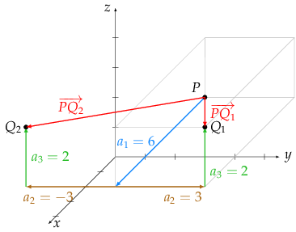
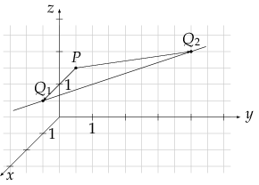

Abstand zweier Punkte im dreidimensionalen Raum
Auf dieser Seite leiten wir die Formel für den Abstand her und rechnen drei Beispiele: Abstand zweier Punkte; eine Koordinate eines Punktes bei gegebenem Abstand gesucht; Punkte auf einer Geraden bei gegebenem Abstand gesucht. Das letzte Beispiel setzt voraus, dass Sie bereits die Gleichung einer Geraden kennen.
Herleitung der Formel
Gesucht ist der Abstand zweier Punkte und im dreidimensionalen Raum. Zur Herleitung der Formel denken wir uns die Punkte als Eckpunkte eines achsenparallelen Quaders im kartesischen Koordinatensystem. Der Abstand der beiden Punkte entspricht dann der Länge der Raumdiagonale:

Die Kantenlängen des Quaders entsprechen den Koordinatendifferenzen (genau genommen jeweils dem Betrag der Koordinatendifferenzen, da Seitenlängen nicht negativ sind). Da der Quader achsenparallel verläuft, stehen alle Kanten senkrecht aufeinander. Die Dreiecke und sind daher rechtwinklig, sodass wir zur Berechnung der Flächendiagonale und der Raumdiagonale den Satz des Pythagoras verwenden können.
Wir möchten die Raumdiagonale berechnen, die die Hypotenuse im Dreieck bildet:
Die Flächendiagonale ist die Hypotenuse im Dreieck :
Wir setzen die zweite Gleichung in die erste ein und ersetzen die durch die Koordinatendifferenzen:
Ziehen wir nun noch die Wurzel, so erhalten wir die Formel:
Zwei Punkte und im dreidimensionalen Raum haben den Abstand
Es sind die Koordinaten des Verbindungsvektors , die quadriert werden. Es ist nicht gerade selten der Fall, dass Sie diesen Vektor in zusammengesetzten Aufgaben benötigen, sodass es sinnvoll ist, zunächst den Vektor zu berechnen. Auf jeden Fall ist es übersichtlicher.
Gelegentlich findet man in der Formel die Koordinaten vertauscht, also zum Beispiel . Innerhalb der Klammern dreht sich dadurch jeweils das Vorzeichen um, und wegen erhält man natürlich ebenfalls das richtige Ergebnis. Lerntechnisch halte ich dies für weniger geschickt: die Struktur „Ende minus Anfang“ kommt in der Schulmathematik so häufig vor, dass man nur mit gutem Grund von dieser Richtung abweichen sollte.
Beispiele
Beispiel 1: Gesucht ist der Abstand der Punkte und .
Lösung: Wir berechnen zuerst den Verbindungsvektor und dann den Abstand:
„LE“ steht für die hier unbekannte Längeneinheit, also zum Beispiel m, cm, km.
Was passiert, wenn man die Punkte vertauscht?
Im Verbindungsvektor ändern sich alle Vorzeichen. Wegen des Quadrierens macht das keinen Unterschied: der Abstand der Punkte ist natürlich gleich.
Beispiel 2: Die Punkte und sollen den Abstand 7 haben. Wie muss gewählt werden?
Lösung: Der Verbindungsvektor enthält eine Unbekannte:
Mit der Forderung erhalten wir eine Gleichung. Wenn man die binomische Formel auflöst, lässt sich die Gleichung mithilfe der -Formel lösen. Es geht aber auch direkt:
Die Punkte und erfüllen somit die Bedingung. Die Verbindungsvektoren und unterscheiden sich nur in der mittleren Koordinate, und auch dort nur im Vorzeichen.
Die folgende Skizze stellt die Situation graphisch dar (zur Hilfe bei der Vorstellung ist einer der Quader eingezeichnet).
Auch die Fragestellung „Welcher Punkt auf der -Achse hat von … den Abstand …“ beruht auf dem gleichen Muster, da zwei Koordinaten bekannt sind ().
Beispiel 3: Welche Punkte der Geraden haben vom Punkt den Abstand ?
Lösung: Wir stellen den Punkt der Geraden allgemein mithilfe des Parameters dar und gehen wie oben vor:
Da die Unbekannte an zwei Stellen vorkommt, müssen die Klammern aufgelöst werden. Im Verlauf der Rechnung entfällt das absolute Glied, sodass die quadratische Gleichung durch Ausklammern gelöst werden kann:
Wir setzen die Werte in ein und erhalten die Koordinaten und der gesuchten Punkte. Auch hierzu wieder eine Zeichnung:
Man darf sich von der Zeichnung nicht verunsichern lassen: Die Punkte auf der Geraden scheinen eine unterschiedliche Entfernung von zu haben, doch das liegt nur am Schrägbild, das die Größen verzerrt darstellt.
Es gibt eine weitere Herangehensweise an die Aufgabe: man berechnet die Schnittpunkte der Geraden mit der Kugel mit Mittelpunkt und Radius . Der Rechenweg ist fast identisch.
Letzte Aktualisierung: 02.12.2015; © Ina de Brabandt
Werbung
Abstandsberechnungen im R3
Beispiele, Erklärungen
- Punkt – Punkt
- Punkt – Gerade: Lotfußpunktverfahren mit Hilfsebene
- Punkt – Gerade: Lotfußpunktverfahren mit laufendem Punkt
- Punkt – Gerade: Formel
- Punkt – Ebene: Lotfußpunktverfahren
- Punkt – Ebene: Formel
- Windschiefe Geraden: Formel
- Windschiefe Geraden: Lotfußpunkte mit laufenden Punkten
- Windschiefe Geraden: Lotfußpunkte mit Hilfsebene
Aufgaben
- Punkt – Punkt (Lösungen)
- Punkt – Gerade: Lotfußpunktverfahren (Lösungen)
- Punkt – Gerade: Formel (Lösungen)
- Punkt – Ebene: Lotfußpunktverfahren (Lösungen)
- Punkt – Ebene: Formel (Lösungen)
- Windschiefe Geraden: Formel (Lösungen)
- Windschiefe Geraden: Lotfußpunkte (Lösungen)
Werbung